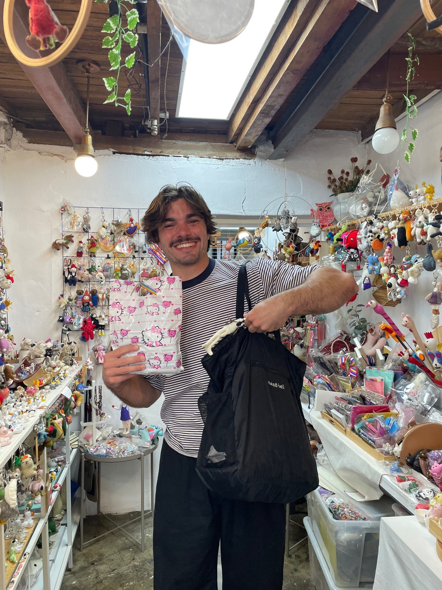

茉莉へ,
J’espère que cette lettre te trouvera bien. Après quelques jours à Séoul, me voilà rentré à Singapour. Comme promis, je te partage les adresses qui m’ont plu.
Si tu veux voir une belle vue de Séoul avec l’emblématique muraille de la ville, je te recommande de te balader au
parc Naksan.
Dans ce coin, je te conseille de profiter du coucher de soleil sur la terrasse d’un café
(Cafe Gaebbul). Et
de manger dans un petit restaurant mignon avec vue sur la ville
(여수서대).
Il y a aussi 2 petits endroits bon en bas du parcours. Pour les gimbaps:
김가네 동대문역점.
Et pour un café avec vue: Jeonggeurida.
Mais surtout, va acheter un souvenir
chez une おばあちゃん trop mignonne.
Elle s’appelle Sofia. Si tu dis que tu es “Victor’s girlfriend”, elle devrait être contente de te voir et te donner quelque chose.
この写真を見せてみて :

Pour profiter d’un joli palais, je te recommande de visiter le palais de Changdeok. À l’ouest de celui-ci, le quartier est très mignon, avec des boutiques et des cafés très chics (Coffee & Brunch - The Hanok, LUNA Touch). Tu peux t’y balader un peu, puis terminer la journée avec un petit verre au Public Dowon et manger dans les célèbres pojangmacha.
Évidemment, comment passer à côté du fameux palais de Gyeongbokgung ? Si tu es dans le coin, va voir le Jogyesa Temple qui a plein de lanternes en ce moment ! Il y a une bonne pizzeria pas très loin, Pizzeria HokeyPokey, si tu veux manger à emporter au bord du Cheonggyecheon.
J’ai oublié de noter plein d’adresses, désolé. Mais si jamais tu passes vers Gangnam, va voir ce parc : Seolleung and Jeongneung Royal Tombs.
Bonne découverte de la ville !